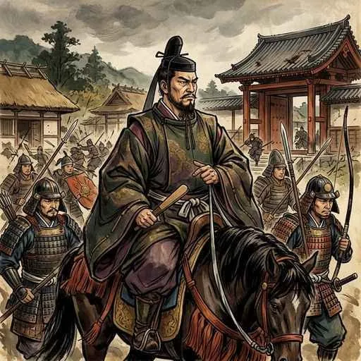
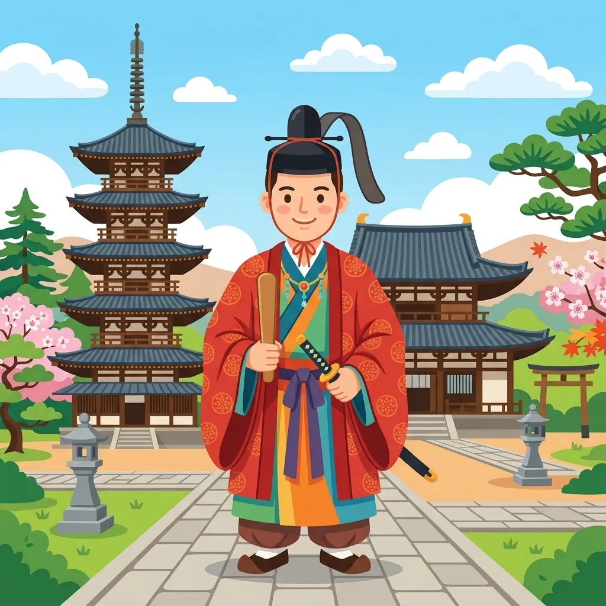
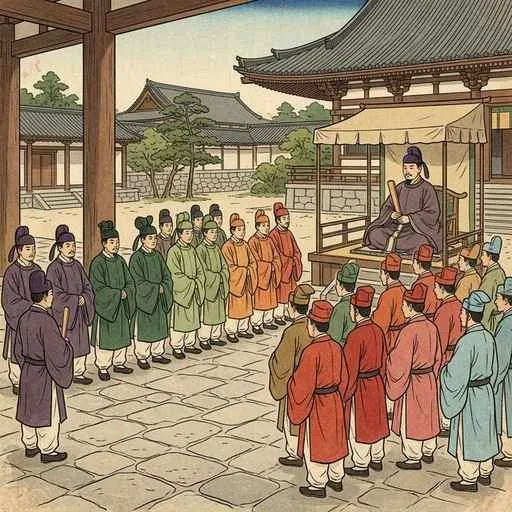
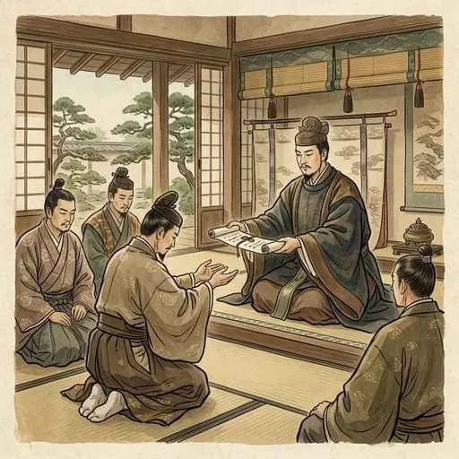
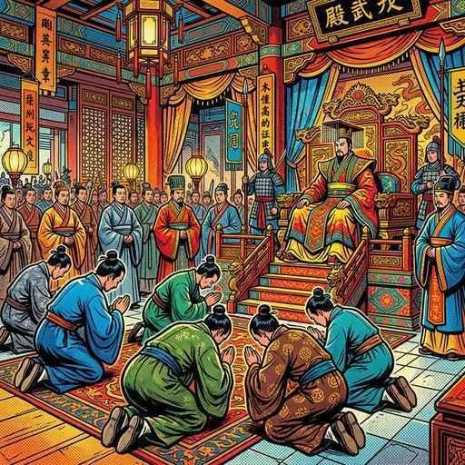
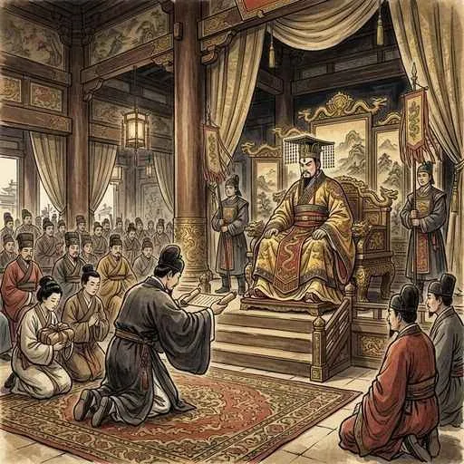
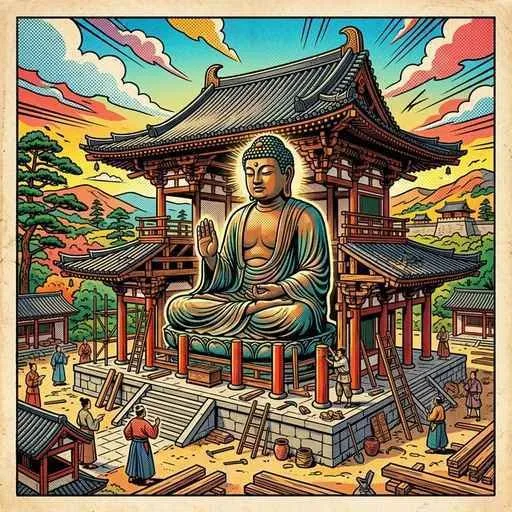
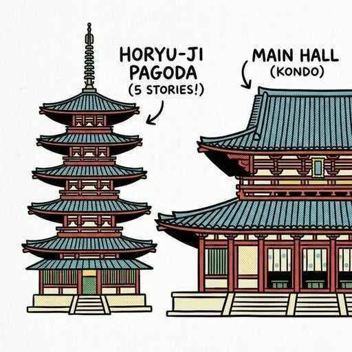
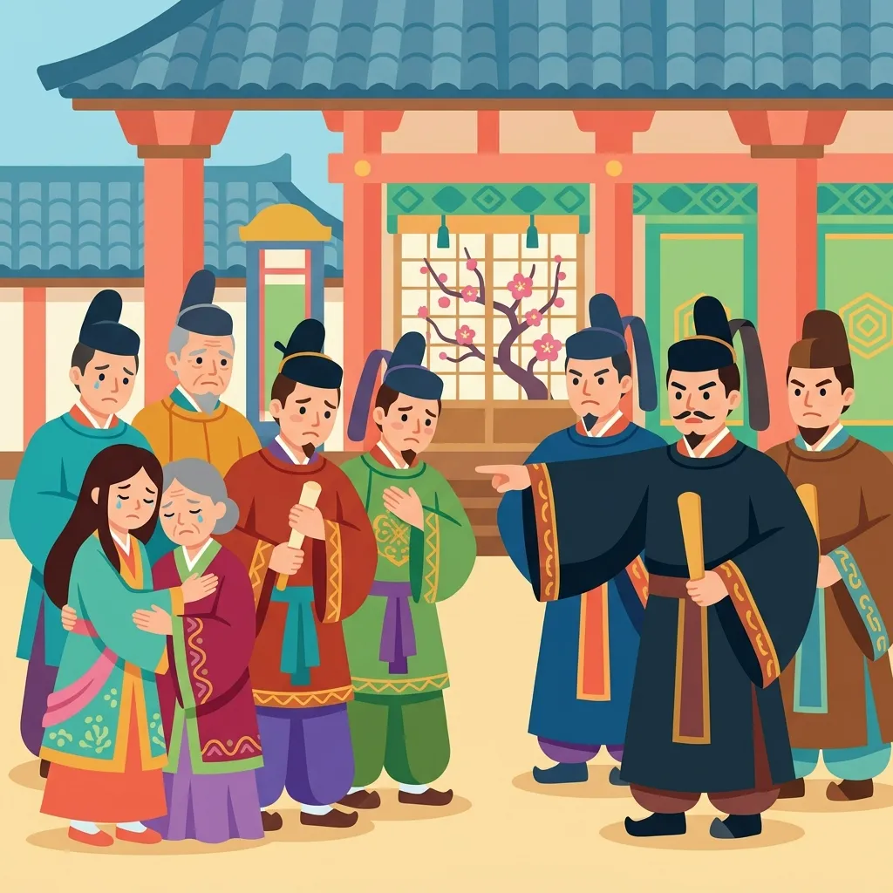

5. 大王の時代
古墳が各地に作られ、ヤマト政権が力を強めていった後、日本は本格的な国づくり（天皇中心の国づくり）をスタートさせます。その立役者となったのが、あまりにも有名な「聖徳太子（厩戸皇子）」です。今回は、聖徳太子の行った様々な政策や、中国（隋）との先進的な外交、そして日本で最初のきらびやかな仏教文化「飛鳥文化」について、イラストや重要ワードを交えながら一気に解説します！
1. 聖徳太子の政治（推古天皇の摂政と蘇我氏）
6世紀の終わりごろ、ヤマト政権の内部では有力な豪族どうしの激しい権力争いが起きていました。中でも、仏教の受け入れを巡って対立した「蘇我氏（そがうじ）」と「物部氏（もののべうじ）」の争いは有名です。
587年、仏教の推進派であった蘇我氏（蘇我馬子）は、対立する物部氏を武力で倒し、政治の実権を握りました。この蘇我氏と強力にタッグを組み、理想の国づくりを進めたのが聖徳太子です。

図1：物部氏を滅ぼし、仏教を保護して権力を握った豪族「蘇我馬子（蘇我氏）」のイメージ
① 初の女性天皇「推古天皇」と摂政
592年、日本で最初の女性の天皇として推古天皇（すいこてんのう）が即位しました。そして翌593年、推古天皇の甥（おい）にあたる聖徳太子（しょうとくたいし／厩戸皇子・うまやどのおうじ）が政治を助ける役職である摂政（せっしょう）に任命されました。
聖徳太子は、推古天皇や蘇我馬子と協力しながら、豪族たちの力が強かったこれまでの政治を改め、「天皇を中心とした中央集権国家」をつくるための様々な改革を進めていきました。

図2：推古天皇の摂政となり、天皇を中心とした国づくりを推し進めた「聖徳太子」
2. 国づくりの二大改革「冠位十二階」と「十七条の憲法」
聖徳太子は、国を治める役人の制度や心構えを整えるために、2つの歴史的な決まりを定めました。どちらも定期テストに確実に出る超重要事項です！
① 実力主義への転換「冠位十二階」（603年）
それまでは、豪族の家柄によって役職や身分が世襲されるのが当たり前でした。聖徳太子はこれを改め、家柄にとらわれず、才能や功績のある優秀な人物を役人に取り立てるための制度冠位十二階（かんいじゅうにかい）を定めました。
この制度では、位を12の段階に分け、それぞれの位に応じて異なる色（紫・青・赤・黄・白・黒の濃淡）の冠を授けて身分を区別しました。これにより、一族の背景に関係なく、やる気と実力のある人が国のために働ける仕組みを作ったのです。

図3：冠の色によって役人の位を区別し、実力主義を取り入れた「冠位十二階」のイメージ
② 役人のルール「十七条の憲法」（604年）
翌年には、役人たちへの道徳的な心構えや、仕事をするうえでの守るべきルールを示した十七条の憲法（じゅうしちじょうのけんぽう）を制定しました。（※現代の国の基本法である「憲法」とは異なり、あくまで公務員である「役人」の心得としての憲法です）。
第一条にある「和を以（も）て貴（たっと）しと為（な）す」（お互いに争わず、協力し合うことが最も大切であるという意味）という言葉は特に有名です。また、第二条の「篤（あつ）く三宝（さんぽう／仏・法・僧のこと）を敬へ」として仏教を敬うことや、第三条の「みことのり（天皇の命令）には必ず従え」として天皇への絶対の忠誠が説かれました。

図4：役人が守るべき道徳や心構えを17条にわたって定めた「十七条の憲法」のイメージ
3. 中国（隋）との「対等な外交」と遣隋使
国内の制度を整える一方で、聖徳太子は中国の高度な国家体制や文化を取り入れるため、海を渡る一大プロジェクトを実行しました。当時、中国を約360年ぶりに統一した強力な大帝国隋（ずい）へ使節を派遣しました。これを遣隋使（けんずいし）と呼びます。

図5：中国（隋）の進んだ思想や社会制度を学び取るために派遣された「遣隋使」のイメージ
① 小野妹子の派遣と対等な外交（607年）
607年、聖徳太子は小野妹子（おののいもこ）らを遣隋使として派遣しました。この時、妹子が大帝国の主である隋の皇帝・煬帝（ようだい）に手渡した国書（外交文書）の一節は、歴史上きわめて有名です。
「日出づる処（ところ）の天子、書を日没する処の天子に致す。恙（つつが）無きや…」
（訳：太陽が昇る国（日本）の皇帝から、太陽が沈む国（中国）の皇帝へ手紙を送ります。お元気ですか？）
これまで日本は中国の皇帝に対して従属的な立場（朝貢）をとっていましたが、この手紙は「日本と中国は対等な関係である」と堂々と主張するものでした。自分たちが世界で一番偉いと信じていた煬帝は、これを見て「無礼である！」と激怒しましたが、当時、隋は隣国の高句麗との戦争を控えており、日本と敵対するのは得策ではないと考えたため、怒りを抑えて日本との国交を開くことに応じました。聖徳太子の狙い通り、日本は対等な立場での外交と、先進文化の導入に成功したのです。

図6：激怒する隋の皇帝・煬帝を前に、冷静に大役を果たした遣隋使「小野妹子」のイメージ
4. 飛鳥文化（日本初の仏教文化）
聖徳太子や蘇我氏が仏教を非常に重んじたため、この時代には仏教の教えに基づいたきらびやかで美しい文化が花開きました。この文化を、当時の政治の中心地（奈良県の飛鳥地方）にちなんで飛鳥文化（あすかぶんか）と呼びます。これは日本で最初の仏教文化です。
飛鳥文化は、中国（南北朝時代の北魏など）や朝鮮半島を介して、さらには遠くインドやギリシャ（ヘレニズム文化）などの西方の芸術的な影響も受けており、国際色が豊かな点に特徴があります。

図7：日本各地に大規模な寺院が建立され、高度な仏教美術が栄えた「飛鳥文化」のイメージ
① 世界最古の木造建築「法隆寺」
聖徳太子が建立した寺院として最も有名なのが、奈良県にある法隆寺（ほうりゅうじ）です。法隆寺の西院伽藍（金堂や五重塔など）は、現存する世界最古の木造建築物として世界的に知られており、日本で最初にユネスコの世界文化遺産に登録されました。

図8：飛鳥時代の建築美を今に伝える、世界最古の木造建築「法隆寺」
② 飛鳥彫刻の最高峰「釈迦三尊像」
法隆寺の金堂の本尊として安置されているのが、銅で作られた釈迦三尊像（しゃかさんぞんぞう）です。作者は、渡来人の子孫で優れた仏師である鞍作鳥（くらつくりのとり／止利仏師・とりぶっし）です。左右対称の厳格な構えや、口元にたたえる「アルカイックスマイル（古風な微笑み）」と呼ばれる神秘的な表情は、中国の北魏の仏像彫刻の影響を色濃く残しています。
5. 聖徳太子の死と蘇我氏の専横
天皇中心の素晴らしい国づくりを進めていた聖徳太子ですが、622年に惜しまれつつ亡くなりました。聖徳太子という強力な重石がなくなると、実権を握る蘇我氏の力がさらに巨大化していきます。
蘇我馬子の跡を継いだ「蘇我蝦夷（えみし）」や「蘇我入鹿（いるか）」の親子は、自分たちの家にまるで王宮のような濠をめぐらせるなど、天皇家をしのぐほどの身勝手な政治（専横）を行うようになりました。ついに彼らは、聖徳太子の理想を引き継ごうとした太子の息子・山背大兄王（やましろのおおえのおう）の一族を武力で攻めて滅ぼしてしまいました。

図9：専横を極める蘇我氏によって滅ぼされた、聖徳太子の一族（山背大兄王）のイメージ
「このままでは日本が蘇我氏の国になってしまう！」という強い危機感が、のちの皇族や豪族たちの心の中に急速に広がっていきました。この行き過ぎた蘇我氏の支配を終わらせるために立ち上がったのが、中大兄皇子と中臣鎌足です。二人が起こした歴史的クーデター「大化の改新（645年）」へと、歴史の歯車は大きく回り始めます。
🔥 定期テスト対策！「大王の時代」の重要ポイント整理
テストで最も出題されやすいポイントをまとめておきました。これさえ覚えておけば点数はバッチリです！
① 「冠位十二階」と「十七条の憲法」の対比
| 制度名 | 制定年 | 主な目的・特徴 |
|---|---|---|
| 冠位十二階 | 603年 | 家柄に関係なく、才能や功績のある優秀な人物を役人に登用する制度。 |
| 十七条の憲法 | 604年 | 「和を以て貴しと為す」など、役人の心構えや道徳的ルールを示した決まり。 |
② 遣隋使の最重要データ
・派遣された人物: 小野妹子（607年）
・相手の国と皇帝: 隋 の 煬帝（ようだい）
・外交の狙い: 中国への従属から脱却し、「対等な外交」を結ぶこと。
・有名な国書: 「日出づる処の天子、書を日没する処の天子に致す…」
③ 飛鳥文化（日本初の仏教文化）の最重要データ
・代表的建築: 法隆寺（現存する世界最古の木造建築物、世界遺産）
・代表的仏像: 釈迦三尊像（作者：鞍作鳥／止利仏師）
・特徴: 中国や朝鮮半島だけでなく、西方のインドやギリシャ（ヘレニズム）の影響も受けている国際色豊かな文化。